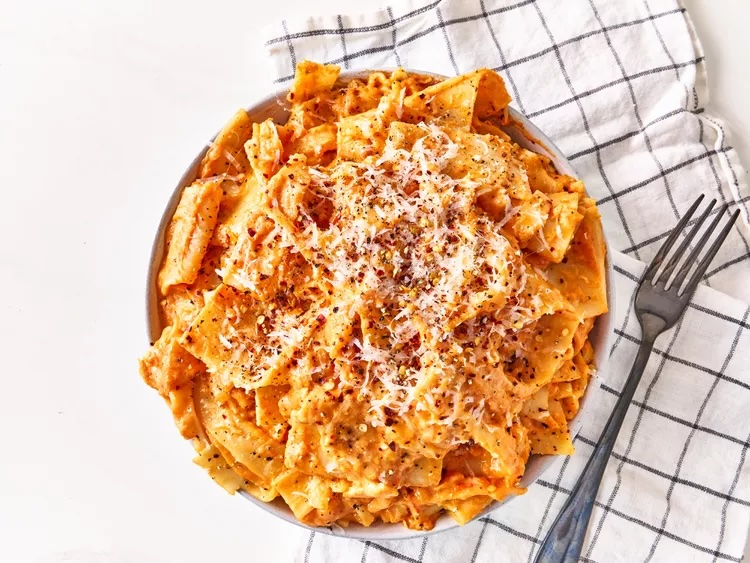

Home
Lasanga Recipe

This is a super simple recipe for making a cheesy lasanga!
Following the instructions below on how to make a simple but amazing tasting Lasanga.
Ingredients List
- 1 Pound ground beef
- 1 Pound bulk italian sausage
- 1/2 Cup Warm Water
- 1 cup sliced black olives
- 1 pinch basil
- 2 teaspoons garlic powder
- 1 tablespoon dried oregano
- 1 1/2 teaspoons dried sage
- 2 teaspoons ground black pepper
- 2 tablespoons minced garlic
- 1 tablespoon dried onion flakes
- 2 (14 ounce) jars marinara sauce
- 1 (16 ounce) package lasagna noodles
- 8 ounces ricotta cheese
- 1 pound mozzarella cheese, shredded
Steps
- Step 1: ground beef and Italian sausage in a large skillet over medium-high heat until browned
and crumbled; drain excess grease. Stir in water and black olives;
season with basil, garlic powder, oregano, sage, pepper, minced garlic, and onion flakes.
Simmer for about 15 minutes, stirring frequently. Stir in marinara sauce and remove from the heat.
- Step 2: Preheat the oven to 375 degrees F (190 degrees C).
- Step 3: Spoon a layer of the meat and sauce in the bottom of a 9x13 inch baking dish.
Cover with a layer of dry noodles. Spread a thin layer of ricotta cheese over the noodles, then sprinkle with some mozzarella cheese.
Cover with another layer of sauce and repeat layering, ending with the meat and sauce on top. Reserve about 1/2 cup mozzarella cheese for later.
- Step 4: Bake in the preheated oven for 45 minutes, but check after 30 minutes depending on how thick the lasagna is.
Lasagna is cooked when you can easily stick a knife into it. Sprinkle reserved cheese over the top and return to the oven until melted, about 10 minutes.